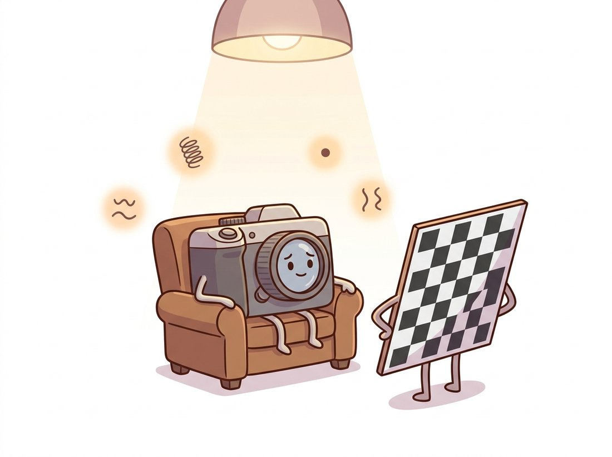

"Wave a checkerboard at me a dozen times and I will confess everything: my focal length, my off-center principal point, and three distortion coefficients I am not proud of."
A Camera Under Calibration Interrogation
Calibration is the estimation problem that turns the camera model of this chapter from algebra into measurement, and Zhang's insight is that a flat printed pattern, photographed from a handful of angles, constrains every parameter: each view of a plane yields a homography, each homography yields two linear equations on the intrinsics, and a final nonlinear polish squeezes out the distortion coefficients. Before Zhang's 2000 paper, calibration needed machined 3D targets and lab equipment; after it, calibration needs a printer and ten minutes. This section walks the mathematics at reading depth, then runs the entire procedure in one OpenCV call and teaches you to read its outputs critically.
The previous two sections defined what we must find: the intrinsic matrix $K$ of Section 12.1 and the distortion coefficients of Section 12.2. This section finds them. The plan rests on a familiar object: the plane-to-image homography you studied in Chapter 5, estimated from point correspondences exactly as in that chapter's DLT. A checkerboard gives us those correspondences nearly for free, because its inner corners are detectable to subpixel precision (the corner machinery of Chapter 10, specialized to a known pattern) and their true positions on the board are known by construction: corner $(i, j)$ sits at $(i \cdot s, j \cdot s, 0)$ for square size $s$. The illustration below sets the scene: the camera confesses its hidden parameters to a patiently tilted checkerboard.

1. What Calibration Must Recover, and Why One Image Cannot Basic
Count the unknowns. The intrinsics contribute four (with skew fixed at zero): $f_x, f_y, c_x, c_y$. Distortion adds five more: $k_1, k_2, p_1, p_2, k_3$. And every photograph of the board adds six extrinsic unknowns, the rotation and translation of the board relative to the camera in that view. With $n$ views the total is $9 + 6n$. Each detected corner supplies two equations (its $u$ and $v$ must match the model's prediction), so a board with $m$ corners seen in $n$ views supplies $2mn$ equations. A $9 \times 6$ corner board in 20 views gives 2160 equations for 129 unknowns: comfortably overdetermined, which is exactly what we want, because corner detection carries noise and only redundancy averages it away.
The catch is that not all equations are independent. A single fronto-parallel view of the board, no matter how many corners, cannot separate focal length from distance: zoom in and step back produces the same picture (the ambiguity demonstrated in Section 12.1). Views must be diverse, especially in tilt, for the equation system to have full rank. That requirement falls straight out of the math below, and it is the single most common reason real calibrations go wrong, a theme Section 12.5 develops into a full capture protocol.
2. Zhang's Insight: Homographies Constrain the Intrinsics Advanced
Put the world coordinate system on the board: the board is the plane $Z = 0$. For a point $(X, Y, 0)$ the projection through $P = K[R\,|\,t]$ uses only the first two columns of $R$:
$$\lambda \begin{bmatrix} u \\ v \\ 1 \end{bmatrix} = K \begin{bmatrix} \mathbf{r}_1 & \mathbf{r}_2 & \mathbf{t} \end{bmatrix} \begin{bmatrix} X \\ Y \\ 1 \end{bmatrix},$$
so the board-to-image mapping is a $3 \times 3$ homography $H = [\mathbf{h}_1\;\mathbf{h}_2\;\mathbf{h}_3] = \mu K [\mathbf{r}_1\;\mathbf{r}_2\;\mathbf{t}]$, estimable from the corner correspondences of one view by the DLT of Chapter 5. Now exploit what we know about $\mathbf{r}_1$ and $\mathbf{r}_2$: they are columns of a rotation matrix, so they are orthogonal unit vectors. Writing $\mathbf{r}_i = \frac{1}{\mu} K^{-1}\mathbf{h}_i$ and imposing $\mathbf{r}_1^\top \mathbf{r}_2 = 0$ and $\|\mathbf{r}_1\| = \|\mathbf{r}_2\|$ gives two equations per view:
$$\mathbf{h}_1^\top B\, \mathbf{h}_2 = 0, \qquad \mathbf{h}_1^\top B\, \mathbf{h}_1 = \mathbf{h}_2^\top B\, \mathbf{h}_2, \qquad \text{where } B = K^{-\top} K^{-1}.$$
Why solve for $B$ rather than $K$ directly? The orthonormality conditions are quadratic in the entries of $K$ but, after substituting $K^{-\top}K^{-1}$, become linear in the entries of $B$; we recover $K$ from $B$ at the end by undoing that substitution. The trick is to make the messy unknown a linear one. The matrix $B$ is symmetric with six distinct entries (five meaningful, since the equations are homogeneous), and crucially the two constraints are linear in those entries.
With the unknown made linear, the rest is mechanical. Stack the constraints from $n$ views into a $2n \times 6$ system and solve it by SVD (the singular value decomposition, whose smallest-singular-value vector gives the best solution to a homogeneous system; see Appendix A: Mathematical Foundations for a refresher), exactly the homogeneous least-squares pattern used for the DLT itself. With $n \geq 3$ general views, $B$ is determined. A Cholesky-style decomposition (the standard factoring of a symmetric positive-definite matrix into a triangular factor times its transpose) then unpacks $K$ from $B$, and each view's $[\mathbf{r}_1\;\mathbf{r}_2\;\mathbf{t}]$ follows by applying $K^{-1}$ to its homography ($\mathbf{r}_3 = \mathbf{r}_1 \times \mathbf{r}_2$ completes the rotation). The degenerate case is now visible in the algebra: two views of the board in parallel planes produce linearly dependent constraint rows, which is the formal version of "tilt the board or learn nothing new."
Before the math thickens, consolidate what the algebra just bought. Each board view gave a homography; the orthonormality of a rotation's columns turned each homography into two equations that are linear in the entries of $B = K^{-\top}K^{-1}$; stacking those equations and solving by SVD gave $B$, and unpacking $B$ gave $K$ and every view's pose. That is the whole linear stage, and it assumes no noise and no distortion, so it is only a starting guess. The next paragraph hands that guess to a nonlinear optimizer that fits the real, distorted, noisy data.
This closed-form solution is exact only in a noiseless, distortion-free world, so it serves as the initialization for the real estimator: a Levenberg-Marquardt minimization of the total squared reprojection error. Levenberg-Marquardt is the standard iterative solver for nonlinear least-squares problems; it interpolates between gradient descent and the Gauss-Newton step, so it converges quickly near a good initial guess (which is exactly why the closed-form stage above matters). It minimizes
$$E(K, \mathbf{d}, \{R_i, \mathbf{t}_i\}) = \sum_{i=1}^{n} \sum_{j=1}^{m} \left\lVert \mathbf{p}_{ij} - \pi\!\left(K, \mathbf{d}, R_i, \mathbf{t}_i, \mathbf{P}_j\right) \right\rVert^2,$$
where $\pi$ is the full projection of Section 12.1 including the distortion polynomial $\mathbf{d}$ of Section 12.2, $\mathbf{P}_j$ the known board corners, and $\mathbf{p}_{ij}$ their detected positions. The distortion coefficients, absent from the linear stage, enter here, starting from zero. Figure 12.3.1 lays out the full pipeline; every modern calibration tool, OpenCV included, is an implementation of this diagram.
cv2.calibrateCamera is this entire diagram behind one function signature.3. Running It: calibrateCamera End to End Basic
Here is the complete, runnable procedure: collect photos of a printed checkerboard (a 10 by 7 squares board has $9 \times 6$ inner corners), detect corners in each, pair them with their known board coordinates, and hand everything to cv2.calibrateCamera. The modern detector findChessboardCornersSB (OpenCV 4.x) returns subpixel-accurate corners directly, replacing the older two-step findChessboardCorners plus cornerSubPix dance and tolerating more blur and stronger perspective.
# Full Zhang calibration: build the exact board-frame corner coordinates,
# detect subpixel corners in every photo, then hand both to calibrateCamera,
# which runs corner-detection through nonlinear refinement in one call.
import glob
import cv2
import numpy as np
PATTERN = (9, 6) # inner corners of a 10 x 7 squares checkerboard
SQUARE = 0.024 # measured square side in meters: measure your actual print!
# Board-frame coordinates of the corners: (i*s, j*s, 0), the plane Z=0.
objp = np.zeros((PATTERN[0] * PATTERN[1], 3), np.float32)
objp[:, :2] = np.mgrid[0:PATTERN[0], 0:PATTERN[1]].T.reshape(-1, 2) * SQUARE
obj_points, img_points = [], []
for path in sorted(glob.glob("calib/*.jpg")):
gray = cv2.imread(path, cv2.IMREAD_GRAYSCALE)
ok, corners = cv2.findChessboardCornersSB( # subpixel corners, one call
gray, PATTERN, flags=cv2.CALIB_CB_EXHAUSTIVE | cv2.CALIB_CB_ACCURACY)
if ok:
obj_points.append(objp)
img_points.append(corners)
rms, K, dist, rvecs, tvecs = cv2.calibrateCamera(
obj_points, img_points, gray.shape[::-1], None, None)
np.set_printoptions(precision=2, suppress=True)
print(f"views used: {len(obj_points)} RMS reprojection error: {rms:.3f} px")
print("K =\n", K)
print("dist =", dist.ravel())
# views used: 23 RMS reprojection error: 0.187 px
# K =
# [[1538.42 0. 967.31]
# [ 0. 1537.95 549.86]
# [ 0. 0. 1. ]]
# dist = [-0.34 0.15 0. 0. -0.04]objp are exact by construction; the detected corners carry the noise; calibrateCamera runs the entire Figure 12.3.1 pipeline and returns the refined intrinsics, distortion, per-view extrinsics, and an RMS reprojection error of 0.187 px across 23 views.
Two practical notes on the inputs. First, SQUARE must be the measured size of the printed squares, not the size requested from the printer; printers rescale, and an error here scales every translation in tvecs (though it leaves $K$ and distortion untouched, since the homography constraints are scale-invariant). Second, the returned rvecs and tvecs are the board poses for each view, which makes calibrateCamera secretly also a pose estimator, foreshadowing the PnP problem of Section 12.4.
The reported RMS is the root-mean-square distance, in pixels, between detected corners and where the fitted model reprojects them. As a rule of thumb: below 0.5 px is fine for AR and robotics, below 0.2 px is achievable for metrology with a good board, and anything above 1 px means a detection or capture problem. But a low RMS is necessary, not sufficient: a calibration from ten nearly identical fronto-parallel views can report 0.1 px while its focal length is wrong by 5%, because the model fit the data it saw and the data never exercised the parameters. The error tells you how well the model fits your views; only view diversity makes that fit transfer to the rest of the world. Section 12.5 turns this warning into concrete diagnostics.
Newcomers treat the RMS as a high score, screenshotting a 0.08 px result like a personal best. It usually means the opposite of what they hope: such suspiciously low numbers most often come from a stack of near-identical fronto-parallel views, a model that fit a tiny, easy slice of reality and learned nothing about the corners or the focal length. A healthy, honestly diverse 25-view session that actually constrains every parameter often lands a less glamorous 0.15 to 0.25 px. The mantra worth taping to the monitor: a low RMS proves your model fit your photos, not that your photos saw your camera.
4. Reading the Numbers: Per-View Errors & Parameter Uncertainty Intermediate
The single RMS figure averages over all views, and averages hide outliers: one image where the board moved during exposure can quietly degrade every parameter. Recomputing the error per view takes five lines with cv2.projectPoints (the same function from Section 12.1, now wearing its diagnostic hat), and any view sitting far above its peers should be deleted, followed by recalibration.
# Recompute reprojection error per view to find outliers the pooled RMS hides.
# Each view's corners are reprojected through its own extrinsics, and any view
# more than 2.5x the global RMS is flagged for inspection (often motion blur).
for i, (op, ip) in enumerate(zip(obj_points, img_points)):
proj, _ = cv2.projectPoints(op, rvecs[i], tvecs[i], K, dist)
err = np.sqrt(np.mean(np.sum((ip - proj) ** 2, axis=2)))
flag = " <-- inspect this image" if err > 2.5 * rms else ""
print(f"view {i:2d}: {err:.3f} px{flag}")
# view 0: 0.151 px
# view 1: 0.172 px
# view 2: 0.694 px <-- inspect this image
# view 3: 0.166 px
# ...2.5 * rms flag catches view 2 at 0.694 px; it turned out to be motion-blurred, and removing it then recalibrating dropped the global RMS from 0.187 to 0.139 px.
OpenCV will also tell you how confident it is in each parameter. cv2.calibrateCameraExtended returns standard deviations for every intrinsic and distortion coefficient, derived from the curvature of the error function at the optimum. These numbers convert calibration from ritual to measurement: a focal length of $1538.4 \pm 1.2$ px is a usable result, while $1538.4 \pm 40$ px from the same RMS tells you the views did not constrain focal length, almost always because nobody tilted the board.
# calibrateCameraExtended also returns per-parameter standard deviations,
# read from the curvature of the error function at the optimum. These turn
# calibration from a ritual into a measurement with stated uncertainty.
(rms, K, dist, rvecs, tvecs,
std_intrinsics, std_extrinsics, per_view_errors) = cv2.calibrateCameraExtended(
obj_points, img_points, gray.shape[::-1], None, None)
names = ["fx", "fy", "cx", "cy", "k1", "k2", "p1", "p2", "k3"]
for name, val, std in zip(names,
[K[0,0], K[1,1], K[0,2], K[1,2], *dist.ravel()[:5]],
std_intrinsics.ravel()):
print(f"{name:3s} = {val:9.3f} +/- {std:.3f}")
# fx = 1538.420 +/- 1.184
# fy = 1537.950 +/- 1.179
# cx = 967.310 +/- 0.642
# cy = 549.860 +/- 0.598
# k1 = -0.341 +/- 0.003
# k2 = 0.150 +/- 0.011
# p1 = 0.001 +/- 0.000
# p2 = -0.001 +/- 0.000
# k3 = -0.040 +/- 0.012calibrateCameraExtended, paired by name with their values. Healthy numbers look like these: fx at $1538.4 \pm 1.2$ px is known to better than 0.1%, the principal point to under a pixel. A $\pm 40$ px focal uncertainty at similar RMS is the fingerprint of insufficient board tilt.Implementing Figure 12.3.1 from scratch is a rite of passage: normalized DLT for each homography (about 40 lines), the $2n \times 6$ constraint stack and SVD solve (20 lines), the Cholesky unpacking of $K$ with its sign gymnastics (15 lines), rotation orthogonalization via SVD (10 lines), and a Levenberg-Marquardt loop over all $9 + 6n$ parameters with numerically stable Jacobians (100+ lines with scipy.optimize.least_squares). Call it 200 lines and two days of debugging the corner cases.
# The entire two-stage Zhang pipeline (DLT, linear B-solve, K extraction,
# and Levenberg-Marquardt refinement) collapses into this single call.
rms, K, dist, rvecs, tvecs = cv2.calibrateCamera(
obj_points, img_points, image_size, None, None)cv2.calibrateCamera call, the 200-to-1 reduction this chapter leans on, with the conditioning, analytic Jacobians, and degenerate-view handling that a homemade version usually gets wrong all hidden inside.Beyond brevity, the library handles what a homemade version typically gets wrong: conditioning normalization inside the homography DLT, the analytic (not finite-difference) Jacobians of the distortion model, parameter fixing flags (CALIB_FIX_ASPECT_RATIO, CALIB_RATIONAL_MODEL, CALIB_FIX_K3) for constraining ill-determined coefficients, and robust handling of views where the board is near-degenerate.
Who and what. A tier-one automotive supplier ran an optical gauging station: a fixed camera over a fixture measures stamped brackets to a 0.05 mm tolerance, using the calibrated pinhole model to convert pixel measurements to millimeters.
The problem. After a routine maintenance shift, the station started failing about 4% of good parts (false rejects). Nothing in the software had changed, and the camera reported the same exposure and the same sharp focus. A week of scrapped-part disputes later, someone compared maintenance logs with the reject-rate timeline: maintenance had swapped the lens for the same model from spares.
The decision. Same lens model is not same lens: unit-to-unit focal length variation of 1 to 2% and a shifted principal point are normal. The team recalibrated (23 board images, RMS 0.14 px) and, more importantly, changed the process: any physical interaction with the camera now triggers mandatory recalibration, and the calibration result is gated on three thresholds before the station may run: RMS below 0.3 px, focal-length standard deviation below 0.15%, and per-view errors all below 0.5 px.
The result and the lesson. False rejects returned to baseline (0.2%) immediately. The lesson the team institutionalized: calibration is a perishable property of one physical camera-lens pairing, not of a product SKU, and the calibrateCameraExtended uncertainty outputs are exactly the right material for an automated quality gate.
Zhang's method assumes you control the scene; a 2024 to 2026 wave of work removes even that. GeoCalib (ECCV 2024, arXiv:2409.06704) recovers intrinsics from a single uncontrolled image by optimizing the same geometric quantities through a learned front end, and reports uncertainty the way calibrateCameraExtended does. Feed-forward geometry models leapfrog the pipeline entirely: DUSt3R (CVPR 2024, arXiv:2312.14132) and VGGT (CVPR 2025, arXiv:2503.11651) output per-pixel 3D and camera parameters for unposed photo collections in one network pass, which is reshaping the front end of the structure-from-motion systems in Chapter 14. The accuracy hierarchy is worth remembering, though: learned single-image calibration reaches a few percent of focal error, good for casual reconstruction; a ten-minute Zhang session reaches a tenth of a percent, and metrology still belongs to the checkerboard. On the classical side, the mrcal toolkit (its 2.4 release, 2024) pushes the opposite frontier: richer splined lens models and rigorous propagation of calibration uncertainty into downstream measurements.
(a) Each view contributes two linear constraints on the six-entry matrix $B$. Explain why three views in general position determine $B$, but three views of the board held at the same orientation (translated only) do not. (b) Show that a single fronto-parallel view leaves the constraint $\mathbf{h}_1^\top B \mathbf{h}_1 = \mathbf{h}_2^\top B \mathbf{h}_2$ unable to separate $f_x$ from the board distance. (c) If skew is fixed to zero and the principal point is assumed known (image center), how many views does the linear stage minimally need?
Print a checkerboard (or display one on a flat monitor, which is flatter than most prints), lock your phone camera's focus and exposure, and capture 25 views following the diversity advice of this section. Run the full pipeline from this section: calibrate, report $K$, distortion, RMS, per-view errors, and the calibrateCameraExtended standard deviations. Then deliberately recalibrate using only the 8 most fronto-parallel views and compare the focal-length standard deviation. Write three sentences explaining the difference using the rank argument of Subsection 2.
From a pool of 30 captured views, bootstrap the calibration: sample subsets of size $n \in \{5, 8, 12, 16, 20, 25\}$ (10 random subsets each), calibrate on each subset, and record $f_x$. Plot the spread (standard deviation across subsets) of $f_x$ against $n$. At what $n$ does the spread flatten? Compare that empirical curve against the per-run standard deviation reported by calibrateCameraExtended, and discuss one reason the two estimates of uncertainty can disagree (hint: the bootstrap sees capture diversity; the analytic estimate assumes the model is correct).